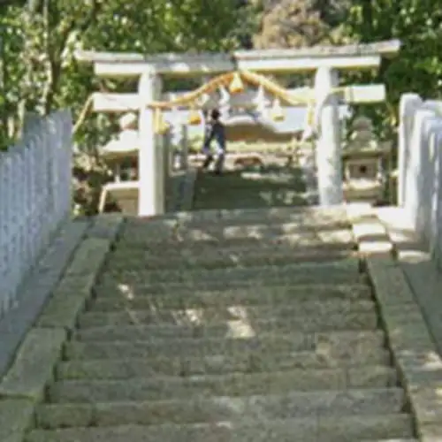
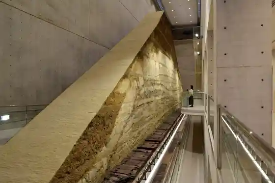
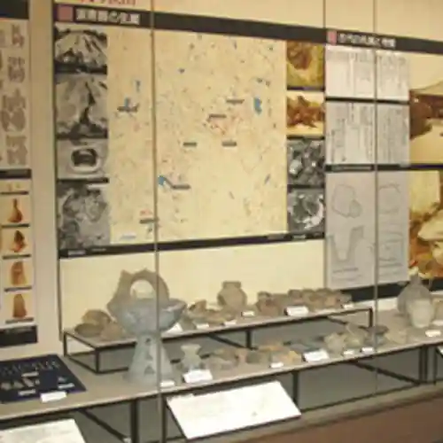
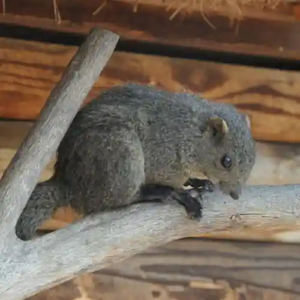
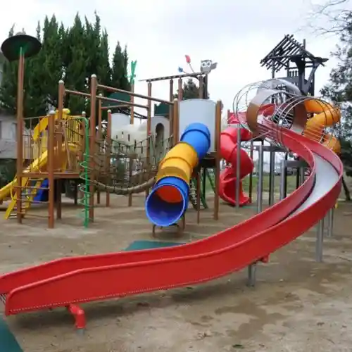

Osakasayama, Osaka
Osakasayama · Osaka
Osakasayama
Highlighted on the Osaka map.

Sights
Santo Shrine
Osakafuritsu Sayama Ike Museum

Osakasayama Ritsu Local History Museum

Shimin Fureai Village Risu Sono

Shimin Fureai Village Seishonen Yagaikatsudo Plaza

Sayama Ike